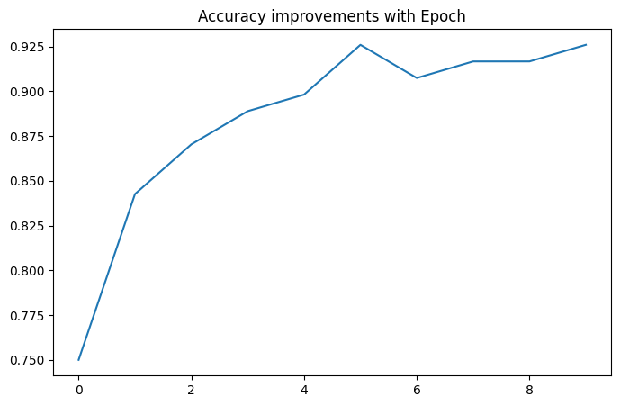

이 예제는 Keras 라이브러리를 사용한 ANN Classification 입니다. 아이리스 꽃 데이터 세트을 통해 알아보도록 하겠습니다.
딥 러닝을 위한 입력 데이터 준비
데이터 준비를 위해 다음 단계를 수행합니다.
- 판다스 데이터 프레임에 데이터를 로드합니다
- 데이터 프레임을 numpy 배열로 변환합니다
- 데이터를 표준화합니다 (Scale)
- 분류할 변수를 원핫 인코딩으로 변화합니다
- 데이터 셋을 분할합니다 (Train / Validation / Test)
import pandas as pd
import os
import tensorflow as tf
import numpy as np
from sklearn.model_selection import train_test_split
from sklearn.preprocessing import StandardScaler
#Load Data and review content
iris_data = pd.read_csv("iris.csv")
print("\nLoaded Data :\n------------------------------------")
print(iris_data.head())
#Use a Label encoder to convert String to numeric values
#for the target variable
from sklearn import preprocessing
label_encoder = preprocessing.LabelEncoder()
iris_data['Species'] = label_encoder.fit_transform(
iris_data['Species'])
#Convert input to numpy array
np_iris = iris_data.to_numpy()
#Separate feature and target variables
X_data = np_iris[:,0:4]
Y_data = np_iris[:,4]
print("\nFeatures before scaling :\n------------------------------------")
print(X_data[:5,:])
print("\nTarget before scaling :\n------------------------------------")
print(Y_data[:5])
#Create a scaler model that is fit on the input data.
scaler = StandardScaler().fit(X_data)
#Scale the numeric feature variables
X_data = scaler.transform(X_data)
#Convert target variable as a one-hot-encoding array
Y_data = tf.keras.utils.to_categorical(Y_data,3)
print("\nFeatures after scaling :\n------------------------------------")
print(X_data[:5,:])
print("\nTarget after one-hot-encoding :\n------------------------------------")
print(Y_data[:5,:])
#Split training and test data
X_train,X_test,Y_train,Y_test = train_test_split( X_data, Y_data, test_size=0.10)
print("\nTrain Test Dimensions:\n------------------------------------")
print(X_train.shape, Y_train.shape, X_test.shape, Y_test.shape)Loaded Data :
------------------------------------
Sepal.Length Sepal.Width Petal.Length Petal.Width Species
0 5.1 3.5 1.4 0.2 setosa
1 4.9 3.0 1.4 0.2 setosa
2 4.7 3.2 1.3 0.2 setosa
3 4.6 3.1 1.5 0.2 setosa
4 5.0 3.6 1.4 0.2 setosa
Features before scaling :
------------------------------------
[[5.1 3.5 1.4 0.2]
[4.9 3. 1.4 0.2]
[4.7 3.2 1.3 0.2]
[4.6 3.1 1.5 0.2]
[5. 3.6 1.4 0.2]]
Target before scaling :
------------------------------------
[0. 0. 0. 0. 0.]
Features after scaling :
------------------------------------
[[-0.90068117 1.01900435 -1.34022653 -1.3154443 ]
[-1.14301691 -0.13197948 -1.34022653 -1.3154443 ]
[-1.38535265 0.32841405 -1.39706395 -1.3154443 ]
[-1.50652052 0.09821729 -1.2833891 -1.3154443 ]
[-1.02184904 1.24920112 -1.34022653 -1.3154443 ]]
Target after one-hot-encoding :
------------------------------------
[[1. 0. 0.]
[1. 0. 0.]
[1. 0. 0.]
[1. 0. 0.]
[1. 0. 0.]]
Train Test Dimensions:
------------------------------------
(135, 4) (135, 3) (15, 4) (15, 3)모델 만들기
Keras에서 모델을 생성하려면 다음을 정의해야 합니다.
- Hidden 레이어 수
- 각 레이어의 노드 수
- Activation 함수
- 손실 함수 및 메트릭
from tensorflow import keras
#Number of classes in the target variable
NB_CLASSES=3
#Create a sequencial model in Keras
model = tf.keras.models.Sequential()
#Add the first hidden layer
model.add(keras.layers.Dense(128, #Number of nodes
input_shape=(4,), #Number of input variables
name='Hidden-Layer-1', #Logical name
activation='relu')) #activation function
#Add a second hidden layer
model.add(keras.layers.Dense(128,
name='Hidden-Layer-2',
activation='relu'))
#Add an output layer with softmax activation
model.add(keras.layers.Dense(NB_CLASSES,
name='Output-Layer',
activation='softmax'))
#Compile the model with loss & metrics
model.compile(loss='categorical_crossentropy',
metrics=['accuracy'])
#Print the model meta-data
model.summary()Model: "sequential"
_________________________________________________________________
Layer (type) Output Shape Param #
=================================================================
Hidden-Layer-1 (Dense) (None, 128) 640
Hidden-Layer-2 (Dense) (None, 128) 16512
Output-Layer (Dense) (None, 3) 387
=================================================================
Total params: 17,539
Trainable params: 17,539
Non-trainable params: 0
_________________________________________________________________모델 훈련 및 평가
#Make it verbose so we can see the progress
VERBOSE=1
#Setup Hyper Parameters for training
#Set Batch size
BATCH_SIZE=16
#Set number of epochs
EPOCHS=10
#Set validation split. 20% of the training data will be used for validation
#after each epoch
VALIDATION_SPLIT=0.2
print("\nTraining Progress:\n------------------------------------")
#Fit the model. This will perform the entire training cycle, including
#forward propagation, loss computation, backward propagation and gradient descent.
#Execute for the specified batch sizes and epoch
#Perform validation after each epoch
history=model.fit(X_train,
Y_train,
batch_size=BATCH_SIZE,
epochs=EPOCHS,
verbose=VERBOSE,
validation_split=VALIDATION_SPLIT)
print("\nAccuracy during Training :\n------------------------------------")
import matplotlib.pyplot as plt
#Plot accuracy of the model after each epoch.
pd.DataFrame(history.history)["accuracy"].plot(figsize=(8, 5))
plt.title("Accuracy improvements with Epoch")
plt.show()
#Evaluate the model against the test dataset and print results
print("\nEvaluation against Test Dataset :\n------------------------------------")
model.evaluate(X_test,Y_test)Training Progress:
------------------------------------
Epoch 1/10
7/7 [==============================] - 1s 39ms/step - loss: 0.8074 - accuracy: 0.7500 - val_loss: 0.5864 - val_accuracy: 0.7778
Epoch 2/10
7/7 [==============================] - 0s 9ms/step - loss: 0.5526 - accuracy: 0.8426 - val_loss: 0.4733 - val_accuracy: 0.7778
Epoch 3/10
7/7 [==============================] - 0s 10ms/step - loss: 0.4364 - accuracy: 0.8704 - val_loss: 0.4130 - val_accuracy: 0.8148
Epoch 4/10
7/7 [==============================] - 0s 8ms/step - loss: 0.3685 - accuracy: 0.8889 - val_loss: 0.3700 - val_accuracy: 0.8148
Epoch 5/10
7/7 [==============================] - 0s 6ms/step - loss: 0.3256 - accuracy: 0.8981 - val_loss: 0.3350 - val_accuracy: 0.8148
Epoch 6/10
7/7 [==============================] - 0s 9ms/step - loss: 0.2893 - accuracy: 0.9259 - val_loss: 0.3059 - val_accuracy: 0.8148
Epoch 7/10
7/7 [==============================] - 0s 7ms/step - loss: 0.2587 - accuracy: 0.9074 - val_loss: 0.2848 - val_accuracy: 0.8519
Epoch 8/10
7/7 [==============================] - 0s 9ms/step - loss: 0.2408 - accuracy: 0.9167 - val_loss: 0.2630 - val_accuracy: 0.8519
Epoch 9/10
7/7 [==============================] - 0s 9ms/step - loss: 0.2189 - accuracy: 0.9167 - val_loss: 0.2492 - val_accuracy: 0.8519
Epoch 10/10
7/7 [==============================] - 0s 9ms/step - loss: 0.2021 - accuracy: 0.9259 - val_loss: 0.2408 - val_accuracy: 0.9259
Accuracy during Training :
------------------------------------
Evaluation against Test Dataset :
------------------------------------
1/1 [==============================] - 0s 38ms/step - loss: 0.2052 - accuracy: 0.9333
[0.20521004498004913, 0.9333333373069763]모델 저장 및 호출
훈련 환경과 예측 환경은 일반적으로 분리되어 있습니다. 모델은 검증이 완료된 후 저장해야 합니다. 그런 다음 실제 예측을 위해 예측 환경에 로드됩니다.
#Saving a model
model.save("iris_save")
#Loading a Model
loaded_model = keras.models.load_model("iris_save")
#Print Model Summary
loaded_model.summary()WARNING:absl:Function `_wrapped_model` contains input name(s) Hidden-Layer-1_input with unsupported characters which will be renamed to hidden_layer_1_input in the SavedModel.
WARNING:absl:`Hidden-Layer-1_input` is not a valid tf.function parameter name. Sanitizing to `Hidden_Layer_1_input`.
WARNING:absl:`Hidden-Layer-1_input` is not a valid tf.function parameter name. Sanitizing to `Hidden_Layer_1_input`.
WARNING:absl:`Hidden-Layer-1_input` is not a valid tf.function parameter name. Sanitizing to `Hidden_Layer_1_input`.
WARNING:absl:Found untraced functions such as _update_step_xla while saving (showing 1 of 1). These functions will not be directly callable after loading.
Model: "sequential"
_________________________________________________________________
Layer (type) Output Shape Param #
=================================================================
Hidden-Layer-1 (Dense) (None, 128) 640
Hidden-Layer-2 (Dense) (None, 128) 16512
Output-Layer (Dense) (None, 3) 387
=================================================================
Total params: 17,539
Trainable params: 17,539
Non-trainable params: 0
_________________________________________________________________호출된 모델 이용하기
#Raw prediction data
prediction_input = [[6.6, 3. , 4.4, 1.4]]
#Scale prediction data with the same scaling model
scaled_input = scaler.transform(prediction_input)
#Get raw prediction probabilities
raw_prediction = model.predict(scaled_input)
print("Raw Prediction Output (Probabilities) :" , raw_prediction)
#Find prediction
prediction = np.argmax(raw_prediction)
print("Prediction is ", label_encoder.inverse_transform([prediction]))1/1 [==============================] - 0s 33ms/step
Raw Prediction Output (Probabilities) : [[0.01433156 0.7977787 0.18788968]]
Prediction is ['versicolor']